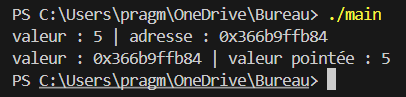

<!DOCTYPE html>
<html lang="en">
  <head>
    <meta charset="utf-8" />
    <meta name="viewport" content="width=device-width, initial-scale=1.0, maximum-scale=1.0, user-scalable=no" />

    <title></title>
    <link rel="stylesheet" href="../include/dist/reveal.css" />
    <link rel="stylesheet" href="../include/dist/theme/white.css" id="theme" />
    <link rel="stylesheet" href="../include/css/vs2015.css" />
	<link rel="stylesheet" href="../include/css/layout.css" />
	<link rel="stylesheet" href="../include/plugin/customcontrols/style.css">
	<link rel="stylesheet" href="../include/plugin/chalkboard/style.css">


    <script defer src="../include/dist/fontawesome/all.min.js"></script>

	<script type="text/javascript">
		var forgetPop = true;
		function onPopState(event) {
			if(forgetPop){
				forgetPop = false;
			} else {
				parent.postMessage(event.target.location.href, "app://obsidian.md");
			}
        }
		window.onpopstate = onPopState;
		window.onmessage = event => {
			if(event.data == "reload"){
				window.document.location.reload();
			}
			forgetPop = true;
		}

		function fitElements(){
			const itemsToFit = document.getElementsByClassName('fitText');
			for (const item in itemsToFit) {
				if (Object.hasOwnProperty.call(itemsToFit, item)) {
					var element = itemsToFit[item];
					fitElement(element,1, 1000);
					element.classList.remove('fitText');
				}
			}
		}

		function fitElement(element, start, end){

			let size = (end + start) / 2;
			element.style.fontSize = `${size}px`;

			if(Math.abs(start - end) < 1){
				while(element.scrollHeight > element.offsetHeight){
					size--;
					element.style.fontSize = `${size}px`;
				}
				return;
			}

			if(element.scrollHeight > element.offsetHeight){
				fitElement(element, start, size);
			} else {
				fitElement(element, size, end);
			}		
		}


		document.onreadystatechange = () => {
			fitElements();
			if (document.readyState === 'complete') {
				if (window.location.href.indexOf("?export") != -1){
					parent.postMessage(event.target.location.href, "app://obsidian.md");
				}
				if (window.location.href.indexOf("print-pdf") != -1){
					let stateCheck = setInterval(() => {
						clearInterval(stateCheck);
						window.print();
					}, 250);
				}
			}
	};

	var programme1 = `#include <iostream>
using namespace std;

int main()
{
    float notes[6] = {12.5, 16, 16.5, 14.25, 15.75, 18};
    float somme = 0;

    for (int i = 0; i < sizeof(notes) / sizeof(int); i++)
    {
        somme += notes[i];
    }
    
    cout << "Moyenne des notes : " << somme / (sizeof(notes) / sizeof(float));
    
    return 0;
}`;
	var programme2 = `#include <iostream>
using namespace std;

int main()
{
    int resultats[10] = {0, 0, 0, 0, 0, 0, 0, 0, 0, 0};
    int frequences[6] = {0, 0, 0, 0, 0, 0};
    int de;

    for (int i = 0; i < sizeof(resultats) / sizeof(int); i++)
    {
        de = 0;

        while (de < 1 || de > 6)
        {
            cout << "Résultat du dé : ";
            cin >> de;
        }

        resultats[i] = de;
        frequences[de - 1]++;
    }

    int positionMode = 0;
    int frequence = frequences[0];

    for (int i = 0; i < sizeof(frequences) / sizeof(int); i++)
    {
        if (frequence < frequences[i])
        {
            frequence = frequences[i];
            positionMode = i;
        }
    }
    
    cout << "Le mode de la série de données est " << positionMode + 1 << "avec une fréquence de " << frequence;
    
    return 0;
}`;
	var programme5 = `#include <iostream>
#include <vector>
using namespace std;

int main()
{
    vector<int> resultats = {0, 0, 0, 0, 0, 0, 0, 0, 0, 0};
    vector<int> frequences = {0, 0, 0, 0, 0, 0};
    int de;

    for (int i = 0; i < resultats.size(); i++)
    {
        de = 0;

        while (de < 1 || de > 6)
        {
            cout << "Résultat du dé : ";
            cin >> de;
        }

        resultats[i] = de;
        frequences[de - 1]++;
    }

    int positionMode = 0;
    int frequence = frequences[0];

    for (int i = 0; i < frequences.size(); i++)
    {
        if (frequence < frequences[i])
        {
            frequence = frequences[i];
            positionMode = i;
        }
    }
    
    cout << "Le mode de la série de données est " << positionMode + 1 << "avec une fréquence de " << frequence;
    
    return 0;
}`;
	var programme6 = `#include <iostream>
#include <vector>
using namespace std;

int main()
{
    vector<float> notes = {12.5, 16, 16.5, 14.25, 15.75, 18};
    float somme = 0;

    for (int i = 0; i < notes.size(); i++)
    {
        somme += notes[i];
    }

    cout << "Moyenne des notes : " << somme / notes.size();

    return 0;
}`;
	var programme7 = `#include <iostream>
#include <vector>
using namespace std;

int main()
{
    vector<float> notes;
    float somme = 0;

    int nbrNotes = -1;
    float note;

    while (nbrNotes < 0)
    {
        cout << "Nombre de notes : ";
        cin >> nbrNotes;
    }

    for (int i = 0; i < nbrNotes; i++)
    {
        note = -1;

        while (note < 0 || note > 20)
        {
            cout << "Note: ";
            cin >> note;
        }

        notes.push_back(note);
    }

    for (int i = 0; i < notes.size(); i++)
    {
        somme += notes[i];
    }

    cout << "Moyenne des notes : " << somme / notes.size();

    return 0;
}`;
	var programme8 = `#include <iostream>
using namespace std;

int main()
{
    int * ptr = new int;
    
    cout << "Adresse stockée : " << ptr << " valeur stockée : " << *ptr;

    return 0;
}`;
	var programme9 = `#include <iostream>
using namespace std;

int main()
{
    int * ptr = new int;
    int nbr = 5;

    ptr = &nbr;

    cout << "valeur de : " << nbr << " | adresse : " << &nbr << endl;
    cout << "valeur de : " << ptr << " | valeur pointée : " << *ptr << endl;

    return 0;
}`;
	var programme10 = `#include <iostream>
using namespace std;

int main()
{
    int * ptr = new int;

    *ptr = 7;

    cout << "valeur de : " << ptr << " | valeur pointée : " << *ptr << endl;

    return 0;
}`;
	var programme11 = `#include <iostream>
using namespace std;

int main()
{
    int * ptr = new int;
    int nbr = 5;

    ptr = &nbr;
    nbr = 6622;

    cout << "valeur de : " << nbr << " | adresse : " << &nbr << endl;
    cout << "valeur de : " << ptr << " | valeur pointée : " << *ptr << endl;

    return 0;
}`;
	var programme12 = `#include <iostream>
using namespace std;

int main()
{
    int tableau[4] = {25, -1, 6, 42};

    int * ptr = tableau;
    
    for (int i = 0; i < sizeof(tableau) / sizeof(int); i++)
    {
        cout << "Élément #" << i + 1 << " du tableau : " << *ptr << endl;
        ptr++;
    }

    return 0;
}`;
	var programme13 = `#include <iostream>
using namespace std;

int main()
{
    int * ptr = new int;
    int nbr = 5;

    ptr = &nbr;
    nbr = 6622;

    cout << "valeur de : " << nbr << " | adresse : " << &nbr << endl;
    cout << "valeur de : " << ptr << " | valeur pointée : " << *ptr << endl;

    delete ptr;

    return 0;
}`;


        </script>
  </head>
  <body>
    <div class="reveal">
      <div class="slides"><section  data-markdown><script type="text/template"><!-- .slide: class="drop" -->
<div class="" style="position: absolute; left: 0px; top: 0px; height: 700px; width: 960px; min-height: 700px; display: flex; flex-direction: column; align-items: center; justify-content: center" absolute="true">

<style> .reveal {  font-size: 180%; line-height: 170%; } .reveal p {font-size:80%;} .reveal code {font-size:120%}</style>
# Séance 3
## Tableaux, vecteurs et pointeurs
</div></script></section><section  data-markdown><script type="text/template"><!-- .slide: class="drop" -->
<div class="" style="position: absolute; left: 0px; top: 0px; height: 700px; width: 960px; min-height: 700px; display: flex; flex-direction: column; align-items: center; justify-content: center" absolute="true">

## La dernière fois...

- &shy;<!-- .element: class="fragment" data-fragment-index="1" --> Les structures conditionnelles
	- &shy;<!-- .element: class="fragment" data-fragment-index="2" --> Blocs *if*, *else-if*, *else* et *switch*	
- &shy;<!-- .element: class="fragment" data-fragment-index="3" --> Énumérations (*enum*)
- &shy;<!-- .element: class="fragment" data-fragment-index="4" --> Boucles
	- &shy;<!-- .element: class="fragment" data-fragment-index="5" --> *for* et *while*
	- &shy;<!-- .element: class="fragment" data-fragment-index="6" --> Instruction *break*

</div></script></section><section  data-markdown><script type="text/template"><!-- .slide: class="drop" -->
<div class="" style="position: absolute; left: 0px; top: 0px; height: 700px; width: 960px; min-height: 700px; display: flex; flex-direction: column; align-items: center; justify-content: center" absolute="true">

# Les tableaux

</div></script></section><section  data-markdown><script type="text/template"><!-- .slide: class="drop" -->
<div class="" style="position: absolute; left: 0px; top: 0px; height: 700px; width: 960px; min-height: 700px; display: flex; flex-direction: column; align-items: center; justify-content: center" absolute="true">

## Les tableaux
- Stocker des données du **même** type dans une variable
- Utile pour stocker un nombre connu de données
- À initialiser manuellement ou avec une boucle *for*


</div></script></section><section  data-markdown><script type="text/template"><!-- .slide: class="drop" -->
<div class="" style="position: absolute; left: 0px; top: 0px; height: 700px; width: 960px; min-height: 700px; display: flex; flex-direction: column; align-items: center; justify-content: center" absolute="true">

## Exemple : stocker des notes dans une variable et afficher la moyenne


</div></script></section><section  data-markdown><script type="text/template"><!-- .slide: class="drop" -->
<div class="" style="position: absolute; left: 0px; top: 0px; height: 700px; width: 960px; min-height: 700px; display: flex; flex-direction: column; align-items: center; justify-content: center" absolute="true">

## Exemple : stocker des notes dans une variable et afficher la moyenne
- Utiliser les crochets [] pour préciser lors de la déclaration le nombre d'éléments
- Utiliser les accolades {} pour initialiser le tableau
- Utiliser les crochets [] pour accéder aux éléments du tableau
	- Obtenir / modifier la valeur à une position précise
	- Les positions d'un tableau commence à 0 !
- Utiliser *sizeof* pour obtenir la taille en **octet** du tableau
	- Diviser par *sizeof*(type) pour obtenir la taille du tableau


</div></script></section><section  data-markdown><script type="text/template"><!-- .slide: class="drop" -->
<div class="" style="position: absolute; left: 0px; top: 0px; height: 700px; width: 960px; min-height: 700px; display: flex; flex-direction: column; align-items: center; justify-content: center" absolute="true">

## Exercice : adapter ce diagramme en programme


</div></script></section><section  data-markdown><script type="text/template"><!-- .slide: class="drop" -->
<div class="" style="position: absolute; left: 0px; top: 0px; height: 700px; width: 960px; min-height: 700px; display: flex; flex-direction: column; align-items: center; justify-content: center" absolute="true">

## Réponse


</div></script></section><section  data-markdown><script type="text/template"><!-- .slide: class="drop" -->
<div class="" style="position: absolute; left: 0px; top: 0px; height: 700px; width: 960px; min-height: 700px; display: flex; flex-direction: column; align-items: center; justify-content: center" absolute="true">

## Comment faire la dernière partie ?

- &shy;<!-- .element: class="fragment" data-fragment-index="1" --> Utiliser un compteur pour chaque résultat possible (1 à 6)
	- &shy;<!-- .element: class="fragment" data-fragment-index="2" --> Tableau à 6 éléments (position - 1 = résultat)
- &shy;<!-- .element: class="fragment" data-fragment-index="3" --> Trouver le compteur le plus élévé
	- &shy;<!-- .element: class="fragment" data-fragment-index="4" --> Parcourir le tableau et comparer le compteur i au maximum connu

</div></script></section><section  data-markdown><script type="text/template"><!-- .slide: class="drop" -->
<div class="" style="position: absolute; left: 0px; top: 0px; height: 700px; width: 960px; min-height: 700px; display: flex; flex-direction: column; align-items: center; justify-content: center" absolute="true">

## Attention
Ce programme ne fonctionne pas


</div></script></section><section  data-markdown><script type="text/template"><!-- .slide: class="drop" -->
<div class="" style="position: absolute; left: 0px; top: 0px; height: 700px; width: 960px; min-height: 700px; display: flex; flex-direction: column; align-items: center; justify-content: center" absolute="true">

## Pourquoi ? Réponse bientôt

&shy;<!-- .element: class="fragment" data-fragment-index="1" --> Explication partielle :

&shy;<!-- .element: class="fragment" data-fragment-index="2" --> <br>

&shy;<!-- .element: class="fragment" data-fragment-index="3" --> 

</div></script></section><section  data-markdown><script type="text/template"><!-- .slide: class="drop" -->
<div class="" style="position: absolute; left: 0px; top: 0px; height: 700px; width: 960px; min-height: 700px; display: flex; flex-direction: column; align-items: center; justify-content: center" absolute="true">

# Les vecteurs

&shy;<!-- .element: class="fragment" data-fragment-index="1" --> Des tableaux à taille non fixe
</div></script></section><section  data-markdown><script type="text/template"><!-- .slide: class="drop" -->
<div class="" style="position: absolute; left: 0px; top: 0px; height: 700px; width: 960px; min-height: 700px; display: flex; flex-direction: column; align-items: center; justify-content: center" absolute="true">

## Différences tableaux / vecteurs

|  | Tableau (`tab`) | Vecteur (`vect`) |
| ----------- | ------------------ | - |
| Taille       | Fixe*                | Non fixe |
| Disponibilité  | Inclus de base | Nécessite une inclusion (`<vector>`) |
| Accéder à une valeur | `tab[i]` | `vect.at(i)` ou `vect[i]` |
| Ajouter une valeur | Impossible | `vect.push_back(valeur)` |
| Obtenir la taille | `sizeof(tab)/sizeof(type)` | `vect.size()` |
| Initialisation | Avec des accolades | Avec des accolades |

*Dans la troisième section, on verra une méthode pour faire des tableaux à taille non fixe

</div></script></section><section  data-markdown><script type="text/template"><!-- .slide: class="drop" -->
<div class="" style="position: absolute; left: 0px; top: 0px; height: 700px; width: 960px; min-height: 700px; display: flex; flex-direction: column; align-items: center; justify-content: center" absolute="true">

## Exercice précédent adapté aux vecteurs


</div></script></section><section  data-markdown><script type="text/template"><!-- .slide: class="drop" -->
<div class="" style="position: absolute; left: 0px; top: 0px; height: 700px; width: 960px; min-height: 700px; display: flex; flex-direction: column; align-items: center; justify-content: center" absolute="true">

## Exercice précédent adapté aux vecteurs
- On précise le type entre les chevrons < et > après `vector`
- `vector` est un nouveau type de variable
	- &shy;<!-- .element: class="fragment" data-fragment-index="1" --> Un type provenant d'une classe (séance 5)

</div></script></section><section  data-markdown><script type="text/template"><!-- .slide: class="drop" -->
<div class="" style="position: absolute; left: 0px; top: 0px; height: 700px; width: 960px; min-height: 700px; display: flex; flex-direction: column; align-items: center; justify-content: center" absolute="true">

## Exercice : modifier ce programme pour utiliser des vecteurs


</div></script></section><section  data-markdown><script type="text/template"><!-- .slide: class="drop" -->
<div class="" style="position: absolute; left: 0px; top: 0px; height: 700px; width: 960px; min-height: 700px; display: flex; flex-direction: column; align-items: center; justify-content: center" absolute="true">

## Réponse


</div></script></section><section  data-markdown><script type="text/template"><!-- .slide: class="drop" -->
<div class="" style="position: absolute; left: 0px; top: 0px; height: 700px; width: 960px; min-height: 700px; display: flex; flex-direction: column; align-items: center; justify-content: center" absolute="true">

## Exercice : adapter ce diagramme en programme


</div></script></section><section  data-markdown><script type="text/template"><!-- .slide: class="drop" -->
<div class="" style="position: absolute; left: 0px; top: 0px; height: 700px; width: 960px; min-height: 700px; display: flex; flex-direction: column; align-items: center; justify-content: center" absolute="true">

## Réponse


</div></script></section><section  data-markdown><script type="text/template"><!-- .slide: class="drop" -->
<div class="" style="position: absolute; left: 0px; top: 0px; height: 700px; width: 960px; min-height: 700px; display: flex; flex-direction: column; align-items: center; justify-content: center" absolute="true">

# Les pointeurs

&shy;<!-- .element: class="fragment" data-fragment-index="1" --> C'est là que les embrouilles commencent...

</div></script></section><section  data-markdown><script type="text/template"><!-- .slide: class="drop" -->
<div class="" style="position: absolute; left: 0px; top: 0px; height: 700px; width: 960px; min-height: 700px; display: flex; flex-direction: column; align-items: center; justify-content: center" absolute="true">

## Les pointeurs

- Stocker une **adresse mémoire** plutôt qu'une valeur
- Nécessite une allocation / désallocation **dynamique** (lors de l'exécution) de mémoire
	- Les variables classiques sont allouées de manière **statique** (lors de la compilation)
- Permet la création d'une seule instance (copie) d'une variable

</div></script></section><section  data-markdown><script type="text/template"><!-- .slide: class="drop" -->
<div class="" style="position: absolute; left: 0px; top: 0px; height: 700px; width: 960px; min-height: 700px; display: flex; flex-direction: column; align-items: center; justify-content: center" absolute="true">

## Les pointeurs


</div></script></section><section  data-markdown><script type="text/template"><!-- .slide: class="drop" -->
<div class="" style="position: absolute; left: 0px; top: 0px; height: 700px; width: 960px; min-height: 700px; display: flex; flex-direction: column; align-items: center; justify-content: center" absolute="true">

## Créer un pointeur

- Utiliser l'étoile `*` pour préciser au compilateur que `ptr` est un pointeur
- `ptr` contient l'adresse, `*ptr` la valeur stockée à l'adresse `ptr` (**valeur pointée**)


<div class="callout callout-color1">
<div class="callout-title">
<div class="callout-icon">
<i class="fas fa-clipboard-list" ></i>
</div>
<div class="callout-title-inner">
Erreur fréquente
</div>
</div>
<div class="callout-content">
Ne pas oublier d'initialiser le pointeur ! Un pointeur non alloué est égal à un `nullptr`.
</div>
</div>

</div></script></section><section  data-markdown><script type="text/template"><!-- .slide: class="drop" -->
<div class="" style="position: absolute; left: 0px; top: 0px; height: 700px; width: 960px; min-height: 700px; display: flex; flex-direction: column; align-items: center; justify-content: center" absolute="true">


- L'adresse stockée par `ptr` change lors de chaque exécution
- La valeur pointée n'est pas initialisée !

</div></script></section><section  data-markdown><script type="text/template"><!-- .slide: class="drop" -->
<div class="" style="position: absolute; left: 0px; top: 0px; height: 700px; width: 960px; min-height: 700px; display: flex; flex-direction: column; align-items: center; justify-content: center" absolute="true">

## Initialiser la valeur pointée

- Préciser manuellement la valeur pointée
- Utiliser l'adresse d'une variable déjà définie

</div></script></section><section  data-markdown><script type="text/template"><!-- .slide: class="drop" -->
<div class="" style="position: absolute; left: 0px; top: 0px; height: 700px; width: 960px; min-height: 700px; display: flex; flex-direction: column; align-items: center; justify-content: center" absolute="true">

## Modifier manuellement la valeur pointée


</div></script></section><section  data-markdown><script type="text/template"><!-- .slide: class="drop" -->
<div class="" style="position: absolute; left: 0px; top: 0px; height: 700px; width: 960px; min-height: 700px; display: flex; flex-direction: column; align-items: center; justify-content: center" absolute="true">

## Utiliser l'adresse d'une variable déjà définie




</div></script></section><section  data-markdown><script type="text/template"><!-- .slide: class="drop" -->
<div class="" style="position: absolute; left: 0px; top: 0px; height: 700px; width: 960px; min-height: 700px; display: flex; flex-direction: column; align-items: center; justify-content: center" absolute="true">

## Exercice : prédire la sortie de ce programme


</div></script></section><section  data-markdown><script type="text/template"><!-- .slide: class="drop" -->
<div class="" style="position: absolute; left: 0px; top: 0px; height: 700px; width: 960px; min-height: 700px; display: flex; flex-direction: column; align-items: center; justify-content: center" absolute="true">

## Réponse


Modifier la valeur pointée de `ptr` modifie la valeur de `nbr` !

</div></script></section><section  data-markdown><script type="text/template"><!-- .slide: class="drop" -->
<div class="" style="position: absolute; left: 0px; top: 0px; height: 700px; width: 960px; min-height: 700px; display: flex; flex-direction: column; align-items: center; justify-content: center" absolute="true">

## Exemple d'utilisation


</div></script></section><section  data-markdown><script type="text/template"><!-- .slide: class="drop" -->
<div class="" style="position: absolute; left: 0px; top: 0px; height: 700px; width: 960px; min-height: 700px; display: flex; flex-direction: column; align-items: center; justify-content: center" absolute="true">

## Autre exemple d'utilisation


</div></script></section><section  data-markdown><script type="text/template"><!-- .slide: class="drop" -->
<div class="" style="position: absolute; left: 0px; top: 0px; height: 700px; width: 960px; min-height: 700px; display: flex; flex-direction: column; align-items: center; justify-content: center" absolute="true">

## Exercice : prédire la sortie de ce programme


</div></script></section><section  data-markdown><script type="text/template"><!-- .slide: class="drop" -->
<div class="" style="position: absolute; left: 0px; top: 0px; height: 700px; width: 960px; min-height: 700px; display: flex; flex-direction: column; align-items: center; justify-content: center" absolute="true">

## Réponse


</div></script></section><section  data-markdown><script type="text/template"><!-- .slide: class="drop" -->
<div class="" style="position: absolute; left: 0px; top: 0px; height: 700px; width: 960px; min-height: 700px; display: flex; flex-direction: column; align-items: center; justify-content: center" absolute="true">

## Attention

La mémoire allouée pour un pointeur ne se désalloue pas automatiquement. Il faut le faire soit même.


</div></script></section><section  data-markdown><script type="text/template"><!-- .slide: class="drop" -->
<div class="" style="position: absolute; left: 0px; top: 0px; height: 700px; width: 960px; min-height: 700px; display: flex; flex-direction: column; align-items: center; justify-content: center" absolute="true">

## Exercice : adapter ce diagramme en programme en n'utilisant que des pointeurs


</div></script></section><section  data-markdown><script type="text/template"><!-- .slide: class="drop" -->
<div class="" style="position: absolute; left: 0px; top: 0px; height: 700px; width: 960px; min-height: 700px; display: flex; flex-direction: column; align-items: center; justify-content: center" absolute="true">

</div></script></section>
</section></div>
    </div>

    <script src="../include/dist/reveal.js"></script>

    <script src="../include/plugin/markdown/markdown.js"></script>
    <script src="../include/plugin/highlight/highlight.js"></script>
    <script src="../include/plugin/zoom/zoom.js"></script>
    <script src="../include/plugin/notes/notes.js"></script>
    <script src="../include/plugin/math/math.js"></script>
	<script src="../include/plugin/mermaid/mermaid.js"></script>
	<script src="../include/plugin/chart/chart.min.js"></script>
	<script src="../include/plugin/chart/plugin.js"></script>
	<script src="../include/plugin/customcontrols/plugin.js"></script>
	<script src="../include/plugin/chalkboard/plugin.js"></script>

    <script>
      function extend() {
        var target = {};
        for (var i = 0; i < arguments.length; i++) {
          var source = arguments[i];
          for (var key in source) {
            if (source.hasOwnProperty(key)) {
              target[key] = source[key];
            }
          }
        }
        return target;
      }

	  function isLight(color) {
		let hex = color.replace('#', '');

		// convert #fff => #ffffff
		if(hex.length == 3){
			hex = `${hex[0]}${hex[0]}${hex[1]}${hex[1]}${hex[2]}${hex[2]}`;
		}

		const c_r = parseInt(hex.substr(0, 2), 16);
		const c_g = parseInt(hex.substr(2, 2), 16);
		const c_b = parseInt(hex.substr(4, 2), 16);
		const brightness = ((c_r * 299) + (c_g * 587) + (c_b * 114)) / 1000;
		return brightness > 155;
	}

	var bgColor = getComputedStyle(document.documentElement).getPropertyValue('--r-background-color').trim();
	var isLight = isLight(bgColor);

	if(isLight){
		document.body.classList.add('has-light-background');
	} else {
		document.body.classList.add('has-dark-background');
	}

      // default options to init reveal.js
      var defaultOptions = {
        controls: true,
        progress: true,
        history: true,
        center: true,
        transition: 'default', // none/fade/slide/convex/concave/zoom
        plugins: [
          RevealMarkdown,
          RevealHighlight,
          RevealZoom,
          RevealNotes,
          RevealMath.MathJax3,
		  RevealMermaid,
		  RevealChart,
		  RevealCustomControls,
		  RevealChalkboard, 
        ],


    	allottedTime: 120 * 1000,

		mathjax3: {
			mathjax: '../include/plugin/math/mathjax/tex-mml-chtml.js',
		},
		markdown: {
		  gfm: true,
		  mangle: true,
		  pedantic: false,
		  smartLists: false,
		  smartypants: false,
		},

		mermaid: {
			theme: isLight ? 'default' : 'dark',
		},

		customcontrols: {
			controls: [
				{id: 'toggle-overview',
				title: 'Toggle overview (O)',
				icon: '<i class="fa fa-th"></i>',
				action: 'Reveal.toggleOverview();'
				},
				{ icon: '<i class="fa fa-pen-square"></i>',
				title: 'Toggle chalkboard (B)',
				action: 'RevealChalkboard.toggleChalkboard();'
				},
				{ icon: '<i class="fa fa-pen"></i>',
				title: 'Toggle notes canvas (C)',
				action: 'RevealChalkboard.toggleNotesCanvas();'
				},
                { icon: '<i class="fa fa-home" onclick = "window.location.href = \'../index.html\';"></i>',
				title: 'Page d\'accueil',
				action: ''
				},
			]
		},
      };

      // options from URL query string
      var queryOptions = Reveal().getQueryHash() || {};

      var options = extend(defaultOptions, {"width":960,"height":700,"margin":0.04,"controls":true,"progress":true,"slideNumber":false,"transition":"slide","transitionSpeed":"normal"}, queryOptions);
    </script>

    <script>
      Reveal.initialize(options);
    </script>
  </body>

  <!-- created with Advanced Slides -->
</html>
